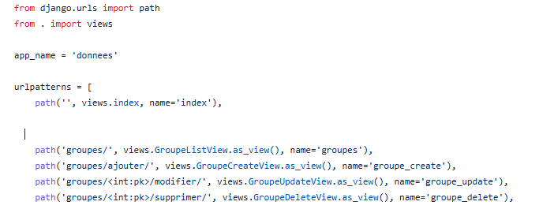
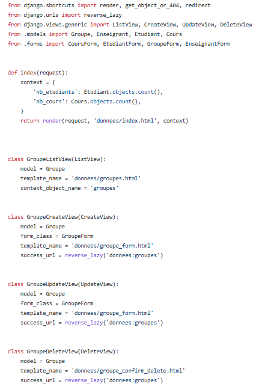
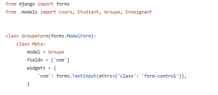

# Contexte du Projet
Dans le cadre de la SAÉ 2.03, notre groupe a dû créer un site web pour gérer les absences dans un département de l'IUT. Ce site est fait pour les secrétaires et les gestionnaires afin de remplacer les feuilles de papier et d'automatiser le suivi.
Les données à gérer
Le site utilise une base de données organisée avec 5 types d'informations :
Les tables de la base de données :
- > Groupes d'étudiants : Identifiant, Nom (ex: RT1-A).
- > Étudiants : Identifiant, Nom, Prénom, Email, Groupe, Photo.
- > Enseignants : Identifiant, Nom, Prénom, Email.
- > Cours : Identifiant, Titre du cours, Date, Enseignant, Durée, Groupe.
- > Absences : Étudiant, Cours, Statut (Justifié ou non), Justificatif.
Pour chaque type d'information, le site doit permettre d'ajouter, afficher, modifier et supprimer des données (ce qu'on appelle un CRUD). Les utilisateurs doivent aussi pouvoir ajouter des absences en chargeant un fichier CSV, ajouter des justificatifs en PDF, et voir une liste finale des absences par étudiant ou par cours.
# Short Project Abstract
"This portfolio presents my work for the SAÉ 2.03 project. Our goal was to create a web application to manage student absences in the university department. With this website, administrators can easily add, see, modify, or delete information about students, teachers, groups, and courses. Users can also upload CSV files to add many absences at the same time, and upload PDF files for justifications. In my team, my main tasks were to create the visual interface of the website using HTML and CSS, and to develop the management part for the 'Groups' module using the Django framework and a MySQL database."
# Mes Réalisations Personnelles
Pour ce projet de groupe, je me suis occupé personnellement de deux grandes parties :
Création des pages web (Design)
Je me suis occupé de toute la partie visuelle pour l'utilisateur.
- Écriture de tout le code HTML et du style CSS pour le site.
- Création des structures de pages avec Django.
- Mise en page des formulaires et de la page pour charger les fichiers.
- Implémentation du CSV pour ajouter des fichier PDF.
Développement de la gestion des Groupes
J'ai programmé le fonctionnement complet du module pour les groupes.
- Mise en place des formulaires pour s'assurer que l'utilisateur saisit de bonnes données.
- Programmation des actions pour afficher la liste, ajouter un groupe, le modifier ou le supprimer (CRUD).
- Liaison de cette partie avec la base de données MySQL.
# Réflexion sur mon travail
Ma démarche et mes choix visuels
Pendant cette SAÉ, j'ai beaucoup réfléchi à la simplicité du site. Comme les secrétaires l'utilisent tous les jours, il fallait que l'interface soit très claire. J'ai choisi des listes simples et de bonnes couleurs pour que l'on repère tout de suite si une absence est justifiée ou non.
Pour la page de chargement du fichier des absences, je savais que l'utilisateur pouvait se tromper de fichier ou inverser des colonnes. C'est pour cela que j'ai ajouté un guide d'aide juste au-dessus du bouton de chargement. Cela permet d'éviter les erreurs avant d'envoyer le fichier au serveur.
Ce que j'ai appris en programmation
La création de la gestion des Groupes m'a permis de comprendre comment l'application communique avec la base de données MySQL. J'ai appris à coder des actions sécurisées pour enregistrer les formulaires. J'ai aussi dû faire attention à ce que la suppression d'un groupe ne crée pas de bug ou ne supprime pas par erreur des étudiants qui y étaient liés.
# Éléments de Preuve
Code des pages & Aide CSV
Partie VisuelleUne interface simple pour l'utilisateur
La preuve de mon travail sur le visuel se voit dans les fichiers du site et l'ergonomie générale.
Élément concret : J'ai créé un tableau d'aide directement sur la page qui indique les colonnes obligatoires pour le fichier CSV, ce qui rend le site plus facile à utiliser.
Gestion des Groupes fonctionnelle
Partie ProgrammationUn code propre et sans bug
Voici les extraits de mon code qui prouvent le fonctionnement complet de la gestion des groupes (clique pour zoomer) :




Élément concret : Ces éléments travaillent ensemble pour permettre d'ajouter, modifier et supprimer un groupe en toute sécurité.